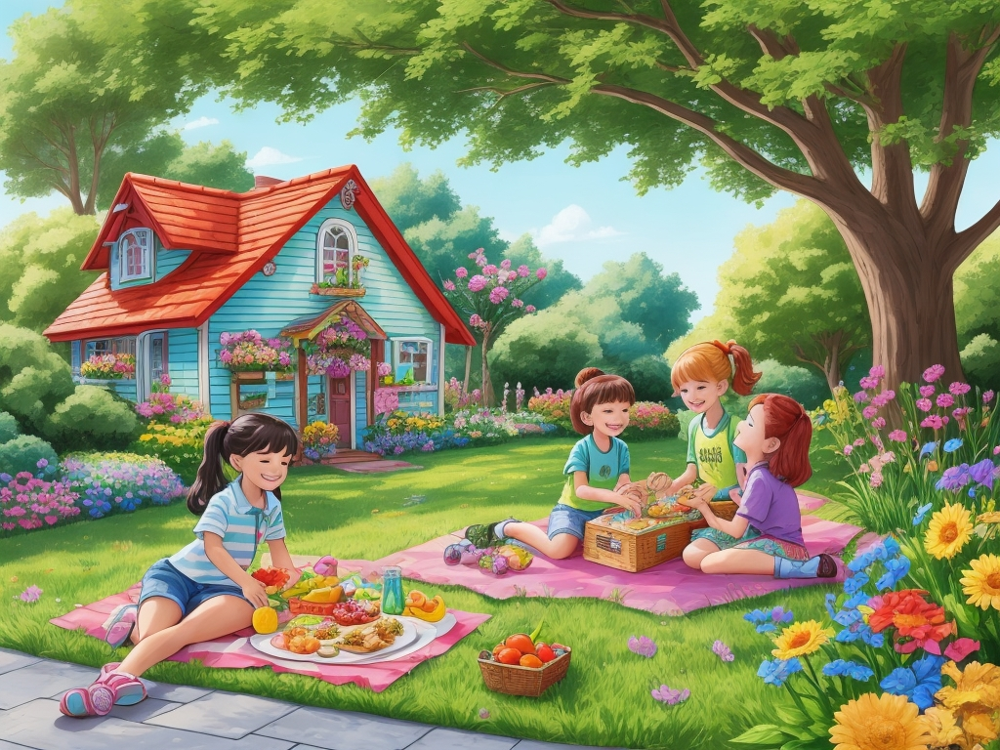

في قرية ملونة، عاش هناك بصل صغير اسمه أوليفر. كان ممتلئ الجسم ومستديرًا، وله طبقات من الجلد الورقي تنبعث منها رائحة قوية كلما كان قريبًا منه. وعلى الرغم من قيمته الغذائية، كان أطفال القرية يميلون إلى تجنبه، ويفضلون بدلاً منه الفواكه والخضروات الحلوة.

بعد ظهر أحد الأيام المشمسة، بينما كان الأطفال يلعبون في ساحة القرية، ارتفعت أصواتهم في الهواء مع ضحكاتهم وثرثرتهم. وكان من بينهم تيمي، وهو صبي صغير ذو ذوق فضولي.
اشتكى تيمي وهو يتجعد أنفه عند التفكير في البصل: "لقد سئمت من تناول نفس الوجبات الخفيفة القديمة كل يوم".
"نعم، أنا أيضًا. رائحة البصل غريبة وطعمه غريب"، وافقت صديقته سارة.

دون علم الأطفال، سمعت والدة تيمي، السيدة طومسون، محادثتهم بينما كانت تعتني بحديقتها القريبة. وبسبب قلقها من فقدان ابنها وأصدقائه للفوائد الغذائية للبصل، قررت التدخل.
ومع وجود سلة مليئة بالبصل الطازج في متناول اليد، اقتربت السيدة طومسون من الأطفال بابتسامة دافئة.
قالت بمرح: "مرحبًا يا أطفال! لم أستطع إلا أن أسمع محادثتكما حول البصل".
التفت إليها الأطفال، وأضاءت وجوههم عند رؤية السلة.
وأوضح تيمي: "نحن لا نحب البصل يا سيدة طومسون. رائحته غريبة".
أومأت السيدة طومسون برأسها متفهمة. "أعلم أن البصل يمكن أن يكون له رائحة قوية، ولكن هل تعلم أنه بمثابة حماة صغيرة لأجسامنا؟"
بدافع الفضول، انحنى الأطفال عندما بدأت السيدة طومسون في الشرح.
وقالت: "تخيل جسدك قلعة، والبصل هو الفرسان الذين يحرسونه". "يتمتع البصل بقدرات خاصة تساعد على إبعاد الأشرار، مثل محاربة الجراثيم الخادعة التي تحاول غزو أجسادنا."
اتسعت عيون الأطفال باهتمام وهم يستمعون إلى شرح السيدة طومسون.
وتابعت السيدة طومسون: "لكن هذا ليس كل شيء". "البصل أيضًا يشبه الجرعات السحرية التي تجعل قلوبنا قوية وعقولنا حادة."
وبينما كانت تتحدث، حملت السيدة طومسون بصلة، مشيرةً إلى طبقاتها. "تمامًا كما يرتدي البطل الخارق طبقات من الدروع، يحتوي البصل على طبقات من الخير تحمي أجسامنا من الأذى."
وبهذا، دعت السيدة طومسون الأطفال للانضمام إليها في المطبخ لإعداد بعض وجبات البصل الخفيفة اللذيذة. قاموا معًا بتقطيع البصل إلى حلقات، وغمسوه في خليط مقرمش، ثم قلوه إلى درجة الكمال، مما أدى إلى إنشاء حلقات بصل مقرمشة جعلت أفواههم تسيل لعابهم.
بعد ذلك، قاموا بكراميل بعض البصل في مقلاة حتى يتحول لونه إلى اللون البني الذهبي ويصبح حلوًا مثل الحلوى. قامت السيدة طومسون بوضعها بين شرائح الخبز مع الجبن لصنع شطائر البصل المكرمل التي لا تقاوم.
وبينما كان الأطفال يتذوقون بفارغ الصبر وجبات البصل الخفيفة، امتلأت براعم التذوق لديهم بالبهجة. لم يصدقوا كيف يمكن أن يكون البصل لذيذًا عند تحضيره بعناية وإبداع.
"هذه رائعة يا سيدة طومسون!" صاح تيمي وهو يلعق أصابعه.
"لم أكن أعلم أبدًا أن طعم البصل يمكن أن يكون جيدًا جدًا!" تدخلت سارة، ووصلت إلى حلقة بصل أخرى.
ابتسمت السيدة طومسون بارتياح عندما علمت أنها نجحت في تعريف الأطفال بعالم البصل الرائع.
منذ ذلك اليوم فصاعدًا، تبنى أطفال فيجيلاند البصل كإضافة لذيذة ومغذية لوجباتهم، وذلك بفضل سحر الطهي الذي تتمتع به السيدة طومسون ووجباتها الخفيفة التي تحتوي على البصل. ولا يمكن أن يكون أوليفر البصل أكثر سعادة عندما علم أنه تم تقديره أخيرًا بسبب الخضار المغذية واللذيذة التي كان عليها.

لقد انتهيت من القصة.
حان الوقت للعبة الاختبار!